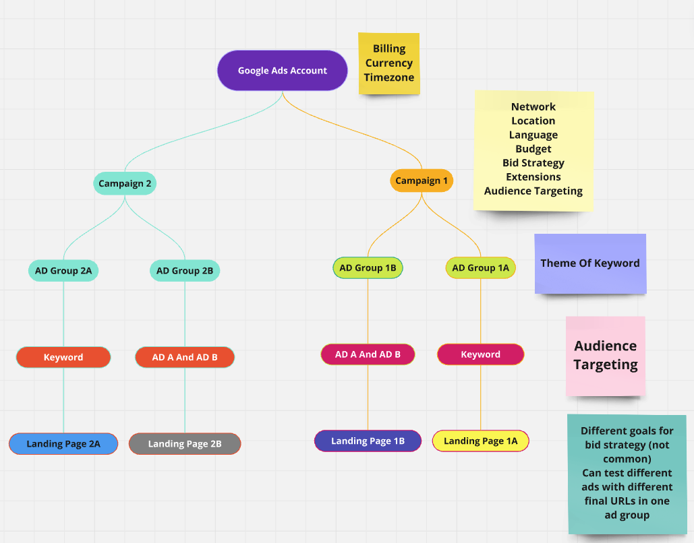

The Core Structure and Functionality of a Google Ads Account
Diagram illustrating the hierarchical structure of a Google Ads account, including campaigns, ad groups, keywords, ads, and landing pages.
- Campaigns: The top level structure where you set goals, budgets and strategy
- AD Groups: Subdivisions within campaigns that group related ads and keywords.
- Keywords: The terms you target to match your ads with user searches.
- Ads: The actual content that users see, including text, images, or videos.
- Budgets: The amount you're willing to spend on a campaign per day.
- Bids: The acount you are willing to pay for each click or impression.
- Targeting: The criteria use to define who sees your ads (e.g., location, demographics, interests).
- Extensions: Additional information added to ads, like phone numbers or links to specific pages.
- Performance Metrics: Key data points such as clicks, impressions, click-through rate(CTR), and conversions that measure the success of your ads.
- Reports: Tools to analyze and visualize your campaign performance.